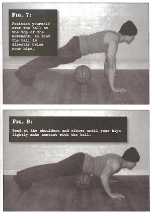
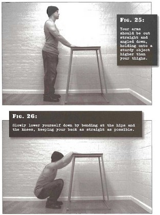
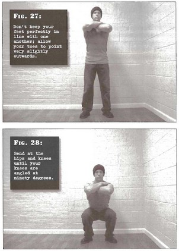
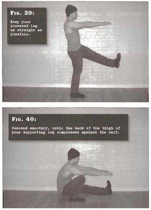
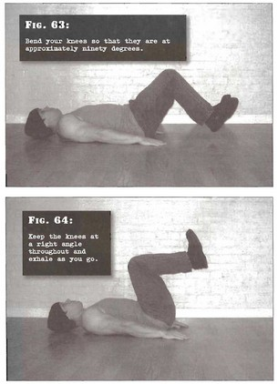
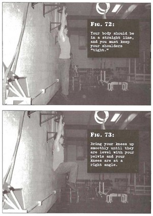
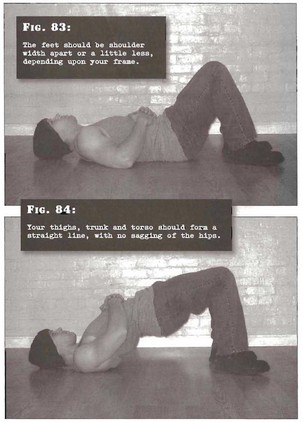
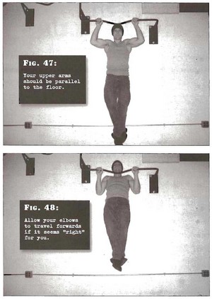
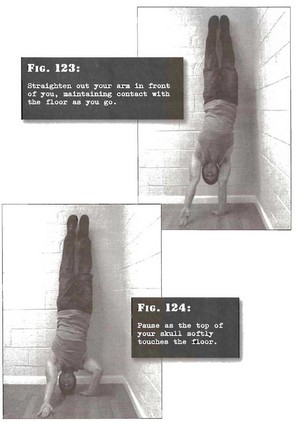

Силовые тренировки
Суть проста: каждое из базовых упражнений разделено на десять этапов, тренирующийся переходит от простого движения к более сложным. Справа у упражнений указано условие перехода к следующему. Подходы выполняются на максимальное количество качественных повторений. Оптимально выполнять по 1-2 упражнения в день, делать дни отдыха и растяжки. Два важнейших правила программы:
- Практически все упражнения выполняются в нарочито медленном темпе с паузами.
- Переход на следующий уровень возможен только после идеальной «шлифовки» техники упражнения.
Поскольку в отжиманиях в планке и в стойке на руках, подтягиваниях задействованы трицепсы, нежелательно совмещать данные упражнения в одну тренировку для качественного результата и ограничения избыточной нагрузки. Подтягивания хорошо забивают верх спины(как и мостик) и предплечья(как подъем ног в висе), поэтому совмещение за тренировку именно с приседаниями оптимально. Например можно делать подтягивания+приседания,отжимания+подъем ног, мосты+стойка на руках.
Если полная амплитуда после травмы причиняет боль, то стоит перейти на более легкий вариант и проработать травму, делать растяжку, а не идти дальше с частичной амплитудой.
Каждый раз после полного забрасывания тренировок, например на пару недель без поддержания формы, стоит начинать с нуля. Организму нужно время для адаптации, сразу давать полную нагрузку небезопасно. Начальные упражнения важнее чем кажутся, именно они вырабатывают правильную технику, позволяют чувствовать нужную группу мышц и прорабатывать именно ее. Как пример слабый пресс или спина вынуждают нас активно задействовать ноги в упражнениях, это нужно преодолеть. Если мы не можем держать медленный темп в начальных упражнениях, то научится этому в последующих будет сложнее. Травмы нужно прорабатывать именно на начальных упражнениях, поспешение не позволит восстановиться и вы начнете снова себя травмировать.
Отжимания
отжимания от стеныНоги сомкнуты, руки на ширине плеч и на уровне груди, выпрямлены. Сгибаем локти, пока не коснемся лбом стены.
| 3x50 |
наклонные отжимания Опора на уровне пояса: подоконник, высокая кровать, тумба и т. д. Сгибаем локти, пока торс не коснется поверхности.
| 3x40 |
отжимания на коленях Встать на колени, руками упереться перед собой,
ноги скрестить позади себя. Сгибаем локти, пока лицо не окажется на
уровне основания кисти руки.
| 3x30 |
половинные отжимания
Под поясом предмет высотой с баскетбольный мяч —
23-24 см. Сгибаем локти до касания. На начальном и продвинутом этапе
мяч можно подвинуть к груди. Лучше купить мяч на этом этапе, т. к. он
все равно пригодится как таковой.
| 2x25 |
полные отжимания Классические отжимания
| 2x20 |
плотные отжиманияЛадони сведены и пальцы рук слегка касаются друг друга. Сгибаем локти, пока грудь не коснется кистей рук.
| 2x20 |
неравномерные отжиманияПод одной из рук предмет высотой 23-24см, в
идеале — неустойчивый, типа баскетбольного мяча. Руки — прямо под
плечами для равновесия. Сгибаем локти, пока грудь не коснется той руки,
которая лежит на мяче.
| 2x20 |
половинные отжимания на 1 рукеПод пахом предмет высотой с баскетбольный мяч — 23-24 см. Свободную руку завести за спину. Сгибать руку до касания мяча.
| 2x20 |
рычажные отжиманияОдна рука отведена в сторону, под ней
баскетбольный мяч, вторая — под плечом. Сгибать руку в локте, пока лицо
не окажется на уровне основания кисти.
| 2x20 |
отжимания на одной рукеПереместить центр тяжести на одну из рук,
свободную руку завести за поясницу. Сгибать руку в локте, пока лицо не
окажется на уровне основания кисти.
|
Приседания
плечи на полуКлассическая «березка»: локти упираются в пол,
ладони — в поясницу, ноги вытянуты вверх. Сгибаем ноги, пока колени не коснутся лба.
| 3x50 |
складной ножичекСогнувшись, кладем руки на
столик, стул или кровать. Ноги на ширине плеч.
Сохраняя спину прямой, пятки не поднимать, приседаем пока бедра не коснутся икр.
| 3x40 |
поддержаный присед
Повторяем аналогичное движение предыдущему
упражнению, но на этот раз используя любой предмет выше уровня бедер
(стул с высокой спинкой или стол).
| 3x30 |
полуприсед
Руки на поясе, на груди или на шее. Ноги на
ширине плеч. Сгибаемся в бедрах и коленях, пока колени не образуют угол в
90°, иначе говоря — пока бедра не станут параллельны полу.
| 2x50 |
полный присед Повторяем аналогичное движение предыдущему
упражнению, но на этот раз до тех пор, пока задняя поверхность бедер не
будут лежать на голенях.
| 2x30 |
узкие приседанияПо книге пятки соприкасаются друг с другом, но мне кажется правильнее носки вместе, а пятки врозь. Руки перед собой. Опускаемся до тех пор, пока грудная клетка не соприкоснется с коленями.
Обрати внимание: при достижении VI ур. приседаний и подъема ног (пресс) можно начать выполнять мосты I уровня. | 2x20 |
разновысокие приседанияОдна нога на поверхности пола, другая — пяткой
упирается в баскетбольный мяч. Сгибая ногу (ту, что упирается в пол),
перемещаем мяч, пока он не коснется икры другой ноги.
Возможно качественное выполнение выпадов может заменить данное упражнение.
| 2x20 |
неполные приседания на одной ногеОдна нога вытянута вперед, вторую сгибаем до тех пор, пока голень и бедро не образуют угол в 90°.
| 2x20 |
приседания на одной ноге с поддержкой Выполняем полный присед на одной ноге, но при этом облегчаем свою задачу, опираясь в нижней точке на баскетбольный мяч.
| 2x20 |
приседания на одной ноге
Медленно выполняем присед на одной ноге. Руки перед собой. В конечной точке торс упирается в колено сгибаемой ноги.
|
Подъем ног
подтягивание колен к животуСидя на стуле или кровати, держимся за край,
ноги вытягиваем вперед, подняв на несколько сантиметров от пола. Плавно
поднимаем колени к груди, пока они не окажутся на расстоянии 15-25см. от
нее. В этот момент нужно выдохнуть. На возвращении в начальное
положение — вдох.
| 3x40 |
подъемы коленей лежа
Лежа на полу, держим ноги вместе и под углом
примерно 90°, от пола 2-5 см. Поднимаем колени над бедрами, до тех пор,
пока не станут перпендикулярны полу, а икры — параллельны.
| 3x35 |
подъемы согнутых коленей лежа Положение такое же, как в прошлом упражнении, но в этот раз, ноги согнуты под углом 45°.
| 3x30 |
лягушачьи подъемы лежа Поднимите согнутые ноги, но вместо паузы в верхней части выпрямляем ноги.
| 3x25 |
ровные прямые подъемы ног Подъем ровных ног.
| 2x20 |
подъем коленей из виса на перекладине
Упражнение на турнике: руки на ширине плеч, сгибаем ноги в коленях и поднимаем их до уровня таза.
| 2x15 |
подъем согнутых ногПодъем осуществляется обеими ногами в полусогнутом виде.
| 2x15 |
висячие подъемы лягушкойПоднимите полусогнутые ноги, но вместо паузы в верхней части выпрямляем ноги.
| 2x15 |
половинные подъемы прямых ногиПоднимаем ноги на 45 градусов, это исходное положение, делаем подъемы до 90 градусов.
| 2x15 |
подъем прямых ног в висе |
Мосты
короткие мосты
Лежа на спине, согнуть ноги в коленях (пятки в
15-20см от ягодиц) и скрестить руки на животе. Выполняем подъем бедер и
спины до тех пор, пока весь вес не переместится на плечи и стопы.
Вдыхать на пути вниз.
| 3x50 |
ровные мосты Сидя на полу держим верхнюю часть тела
вертикально прямо, ладонями упираемся по разные стороны от бедер.
Поднимаем таз до тех пор, пока торс и ноги не образуют прямую линию.
Выдох на подъеме вверх, вдох — вниз.
Поверхность и одежда с обовью должны обеспечивать достаточное скольжение.
| 3x40 |
мосты под угломНеобходим невысокий устойчивый предмет (высотой
на уровне коленей). Упираясь в него руками, выполнить подобие мостика,
поднявшись на руках на несколько сантиметров. Дыхание обычное.
| 3x30 |
мосты на головеАналогичное упражнение, но в этот раз невысокая
опора не требуется, вместо нее — пол. В нижнем положении слегка
касаемся головой поверхности пола.
| 2x25 |
половинные мостыНеобходим предмет высотой с футбольный или
баскетбольный мяч. Ставим его под поясницу и делаем мосты поднимаясь и
опускаясь до легкого касания мяча спиной.
| 2x20 |
полные мосты Делаем полные мосты, техника на иллюстрации.
| 2x15 |
шагающие по стене мосты (вниз)Встаем спиной к стене на расстояние вытянутой
руки. Прогибаемся назад, задирая голову, затем вытягиваем руки к стене и
ставим их пальцами вниз на уровне головы. Безопасно упираясь, поочердно
передвигаем руки к основанию стены. По мере этих шагов может
понадобится отодвинуться от стены. Конечная точка — руки на полу. После
этого опускаемся на пол и снова встаем на ноги.
| 2x10 |
шагающие по стене мосты (вверх)Упражнение выполняется прямо противоположно предыдущему. В самой верхней точке нужен толчок для полного выпрямления.
| 2x8 |
закрытые мостыРуки на бедрах, таз тянется вперед.
Одновременно сгибаем колени, прогибаем спину и запрокидываем голову. На
уровне ниже 1 метра до головы необходимо снять руки с пояса и отправить
из за голову до касания с полом. Движение единое и плавное. В нижней
точке нужно опуститься на пол и снова занять исходную позицию.
| 2x6 |
двухопорные мостыРуки на бедрах, таз тянется вперед.
Одновременно сгибаем колени, прогибаем спину и запрокидываем голову. На
уровне ниже 1 метра до головы необходимо снять руки с пояса и отправить
из за голову до касания с полом. Движение единое и плавное. В нижней
точке нужно опуститься на пол и снова занять исходную позицию.
|
Подтягивания
вертикальные подтягиванияВстаньте на расстояние 10-15 см от надежно
закрепленного вертикального предмета (дверной косяк, балка или пр.) и
ухватитесь за него руками на уровне груди. В идеале — если руки будут на
ширине плеч. Отклоняясь назад, выпрямляем согнутые в локтях руки.
Задерживаемся на секунду и возвращаемся в исходное положение.
| 3x40 |
горизонтальные подтягивания Необходим предмет, имеющий проем снизу и
достаточно устойчивый, чтобы выдержать ваш вес. Навряд ли это ваш
стол=). Из горизонтального положения ухватитесь за предмет прямым хватом
(руки на ширине плеч) и повисните на прямых руках. Тело держим прямым.
Сгибая локти, подтягиваемся вверх до касания поверхности на уровне
кистей.
| 3x30 |
подтягивания «Складной нож»Необходим стул, установленный под
турником. Уложите лодыжки на стул (не бедра!), выпрямите ноги. Высота
стула, чтобы ноги и корпус образовали прямой угол. Из такого положения поднимаем себя вверх с помощью
рук, пока подбородок не окажется выше перекладины. После секундной задержки возвращаемся в
исходное положение.
Вместо стула подойдет шведская стенка.
| 3x20 |
неполные подтягивания
Ухватитесь за перекладину прямым хватом, руки на
ширине плеч, локти под прямым углом (это ключевое отличие от полных
отжиманий), плечи параллельны полу. Согните колени и заведите лодыжки
одну за другую. Подтянитесь до тех пор, пока подбородок не окажется над
перекладиной. Пауза в 1 секунду и медленный спуск в исходное положение.
| 2x15 |
полные подтягивания Повисните на турнике, ухватившись за него на
ширине плеч или чуть шире. Как и в прошлом упражнении скрестите ноги.
Подтянитесь до тех пор, пока подбородок не окажется над перекладиной.
Пауза в 1 секунду и медленный спуск в исходное положение.
| 3x10 |
узкие подтягиванияВыполняем подтягивания прямым хватом, близко расположив друг к другу кисти рук.
| 3x10 |
разновысокие подтягиванияВозьмитесь за перекладину одной рукой обратным
хватом, а другой схватитесь за запястье рабочей руки так, что большой
палец нерабочей руки будет находиться под ладонью, а пальцы — под
тыльной стороной кисти. Сгибая рабочую руку в локте, подтягивайтесь
вверх, пока подбородок не окажется над перекладиной.
| 2x9 |
неполные подтягивания на одной рукеВозьмитесь за перекладину одной рукой тем
хватом, который вам по нраву. Свободная рука должна находиться в любом
комфортном положении. Согните локоть рабочей руки под прямым углом — это
исходное положение. Подтянитесь вверх, сгибая локоть до тех пор, пока
подбородок не окажется над перекладиной.
| 2x8 |
подтягивания на одной руке с поддержкойПеребросьте полотенце через перекладину,
ухватитесь за перекладину одной рукой любым хватом, а другой рукой — за
полотенце на уровне глаз. Помогая себе полотенцем подтягиваемся до того
момента, как локоть рабочей руки не согнется под прямым углом. Не
прерывая подъем, отпускаем полотенце. После спуска вновь схватитесь за
полотенце.
| 2x7 |
подтягивания на одной руке |
Отжимания в стойке на руках
стойка на голове у стеныУ основания надежной стены кладем коврик или
подушку. Встаньте на колени и поставьте голову на коврик (голова на
расстоянии 15-25 см. от стены). Руки на ширине плеч, ладони у головы.
Ставим колено сильной опорной ноги ближе к локтю, другая нога —
выпрямлена. Оттолкнитесь опорной ногой вверх, при этом, поднимая другую
ногу вверх. Выпрямите ноги по стене. Держите рот закрытым, дышите через
нос. Выдержав необходимое время, согните ноги в коленях и медленно
опуститесь в начальное положение.
| 2 мин. |
стойка «Ворон»Сядьте на корточки, колени врозь. Положите
ладони на пол перед собой, примерно на расстоянии ширины плеч. Немного
согни руки в локтях. Наклонись немного вперед, постепенно перенося вес
тела с ног на руки. Когда поймаете баланс, оторвите ноги от пола.
Держите мышцы ног в напряжении. После выполнения аккуратно поставьте
ноги на пол.
| 1 мин. |
стойка на руках у стеныПоставьте руки на расстоянии 15-25 см. от
стены, согните колени, подтяните колено сильной ноги к локтю.
Оттолкнитесь другой ногой от пола и вытяните обе ноги над собой, касаясь
пятками стены.
| 2 мин. |
неполные отжимания в стойке на руках у стеныПримите стойку на руках. Начните медленно сгибать локти.
Остановитесь на секунду, как только от макушки до пола останется около 15 см,
а затем отожмитесь вверх.
| 2x20 |
отжимания в стойке на руках у стеныПримите стойку на руках, медленно сгибайте локти.
Остановитесь на секунду, как только макушка достанет пола,
а затем отожмитесь вверх.
| 2x20 |
узкие отжимания в стойке на руках у стеныПримите стойку на руках, но при этом сведите их
до соприкосновения указательных пальцев. Сгибайте локти до касания
головой пола. Затем поднимитесь вверх.
| 2x12 |
разновысокие отжимания в стойке на руках у стеныПоложите у стены баскетбольный мяч. Примите
стойку на руках, после чего положите одну из рук сверху на мяч.
Распределите вес на обе руки и выполняйте сгибание локтей до тех пор,
пока голова не коснется пола. Затем примите исходное положение.
| 2x10 |
неполные отжимания на одной рукеПримите стойку на руках. Медленно переносите
вес тела на одну руку, затем осторожно оторвите свободную руку от пола.
Затем согните локоть рабочей руки и опуститесь до половины расстояния
головы от пола. Затем отожмитесь вверх.
| 2x8 |
отжимания на одной руке с поддержкой
Встаньте в стойку на руках. Медленно перенесите
вес на одну из рук. Свободную руку выведите вперед ладонью вверх и
слегка коснитесь пола. Поддерживая баланс свободной рукой, медленно
сгибайте локоть рабочей руки до касания головой пола. Затем вернитесь в
исходное положение.
| 2x6 |
отжимания в стойке на одной рукеПолностью отжаться до касания головой пола.
Можно совершать рывки и помогать себе ногами.
|
Дополнение
Таблица с выжимкой программ из первой книги «Тренировка заключенных» (Convict Conditioning)с фотографиями и кратким описанием.
Программа предполагает использование исключительно собственного веса, в качестве «тренажеров» — минимальный набор окружающих предметов, самым редким из которых может оказаться разве что турник. Включает в себя набор гимнастических (калистенических) упражнений, собранных Полом Уэйдом из теории и практики атлетов «старой школы».
Если восстановления не хватает, лучше делать по 1 упражнению за тренировку и сосредоточится на растяжке. Разные упражнения на схожие группы мышц за тренировку есть смысл делать при развитой форме, как и экспериментировать с темпом выполнения повторений. Может быть полезным для преодоления замедления продвижения в тренировках, чтобы не делать просто много повторений одного упражнения, а внести разнообразие. Хотя силу развивает именно медленная и правильная техника.
Отжимания и подтягивания на 1 руке может быть проще достичь, выполняя до предпоследних упражнений (или вместе с ними) начальные с 1 рукой.
Ссылки
Делал по примеру таблицы
Тренировка Заключенных Пола Уэйда